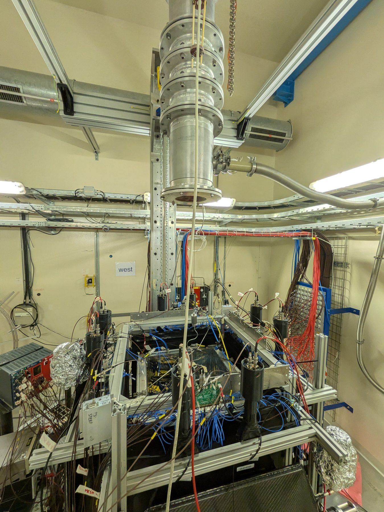
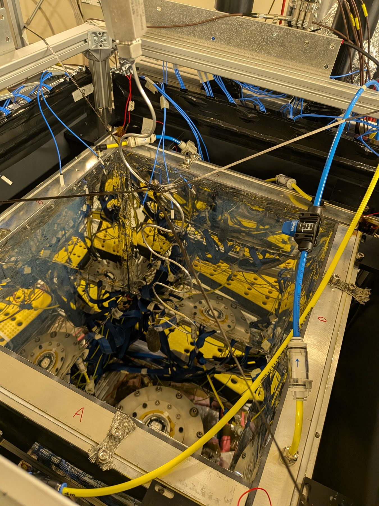
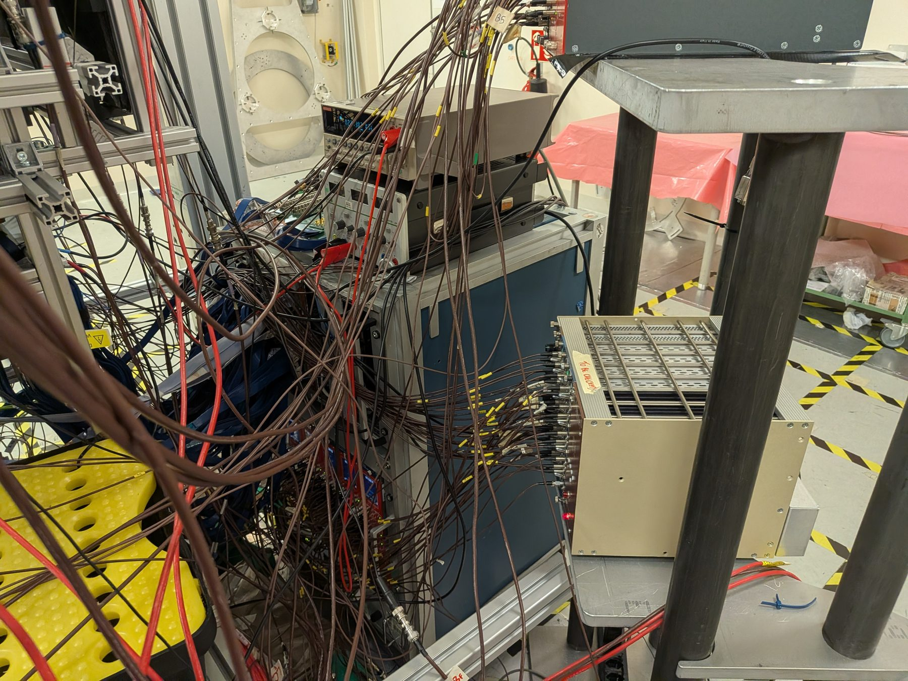
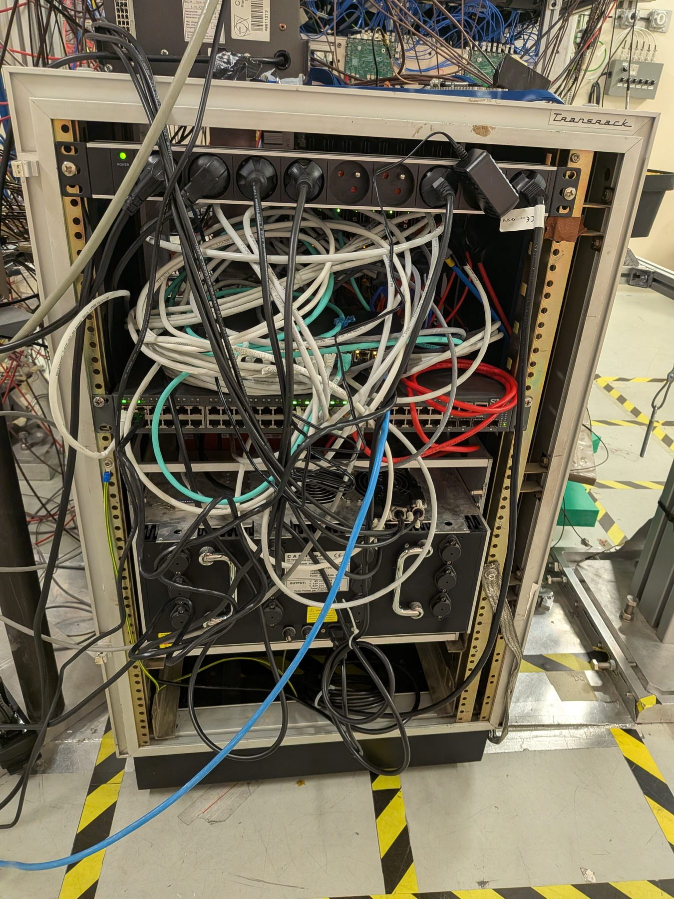

The 2026 X17 physics run at n_TOF EAR2
Dylan Neff
Written by Claude (Anthropic's Claude Opus 5, via Claude Code) from the run logbook and the campaign's analysis packages
Last edited 19 August 2026 · analysis ongoing, contents subject to change
Every reconstruction, tracking and detector-performance number in this report is preliminary and is likely to change.
Figures and statements carrying a red Preliminary tag are demonstrations that the analysis chain works end to end, not measurements. Treat every number in them as provisional.
Between 28 June and 10 August 2026 the X17 collaboration at n_TOF installed four resistive-strip micromegas TPCs, the scintillators behind them and a four-arm trigger in EAR2, commissioned them on the neutron beam, and took about three weeks of production data. This report is the record of what was built, what was measured, and what a future measurement would have to do differently.
Two things frame everything else. First, the read-out cannot survive the beam pulse, and that is what ruled out the high-energy measurement we came for. The γ flash at EAR2 delivers of order 102 nC of avalanche charge per beam pulse per chamber — measured here for the first time — and the DREAM front end saturates on it and is then blind for milliseconds, which is the same timescale as the physics window. Neither Ciro's mesh charge-injection circuits nor any isobutane fraction bought that dead time back, so the MeV measurement was abandoned during commissioning and the run became a thermal measurement. That drove every operating decision afterwards.
Second, at thermal energies the physics itself is against us: the ³He(n,p) channel dominates completely, the ⁴He excitation branch we want is ~10−8 of it, and aluminium capture on the capsule produces ~96 % of our triggers — so what we recorded is, to first order, an aluminium measurement with a well-characterised tracker sitting in it.
None of that makes the run a null. We have a large dataset joined event by event to the n_TOF stream at 96 % efficiency and 0.05 % accidentals, a tracker that demonstrably images the target, a quantitative specification for what a post-LS3 front end must survive, and a detector-level understanding of the flash environment that did not exist before.



1. What was installed
The apparatus is four MX17 resistive-strip micromegas, chambers A, B, C and D, arranged in a pinwheel around the beam axis with their mylar windows 40.8–40.9 cm apart across the beam, each shifted 1.6–1.7 cm off centre so that their 30 mm drift gaps overlap. Each chamber has 512 strips per plane on a 778.5 µm pitch, read out by two DREAM FEUs (1 024 channels per chamber, 8 FEUs and 4 096 channels in all). The active area was measured during the run — 39.9 cm tangential × 36.0 cm along the beam, against the 38 × 34 cm guess the simulation had carried since the start of the project; the missing 3.6 cm is a passivation band at each end of the beam coordinate, not the tangential one.
Behind each chamber sits one arm of the trigger. First a SiPM wall: a wall of scintillator bars 2.5 cm wide, each read out by SiPMs at the top and at the bottom, in four groups of four bars whose SiPMs are summed at the top and at the bottom separately — eight channels per wall, 32 in the experiment. Behind the wall sit two plastic bars, 2 cm thick, read out by PMTs. Four liquid-scintillator cells were eventually mounted, one behind each arm, but they never entered the trigger. The cells are nominally 4 L and were over-filled to ~6.5 L, which is why they bulge by ~1.3 cm on each face — the reason the first two would not sit together in their clamps (§2).
The neutron target is a highly pressurised ³He capsule at 500 bar on the beam axis, 23.5 cm from each chamber's strip plane.


The capsule is the one part of the apparatus that simply worked, and it is worth showing because it is also the only thing we monitored continuously that never gave us a bad day:

| chamber A | chamber B | chamber C | chamber D | |
|---|---|---|---|---|
| FEUs | 3, 4 | 5, 6 | 7, 8 | 1, 2 |
| production resist HV | 540 V | 540 V | 525 V | 520 V |
| production drift HV | −700 V | −700 V | −700 V | −700 V |
| paired tracks, run_79 (2 sub-runs) | 15 056 | 2 546 | 13 868 | 3 622 |
2. Hardware set-up (28 June – 14 July)
The chambers were assembled on their frame in the conference room over 29–30 June and mounted on the beam line on 30 June. All DREAM cabling and the gas and grounding routing went in the same day, and the first pedestals with the full cable plant showed straight away the one difference between the chambers that we already knew about.
The left-hand column below is the number that matters for anyone looking at raw data: the per-channel pedestal width before common-noise subtraction, on the first pedestals of the run.
| 30 June, per-channel pedestal σ [ADC] | chamber A (CERN board) | chamber B | chamber C | chamber D |
|---|---|---|---|---|
| raw — before common-noise subtraction | 5.5 / 7.7 | 173 / 155 | 86 / 201 | 91 / 81 |
| after common-noise subtraction | 3.0 / 3.0 | 6.1 / 6.0 | 4.9 / 8.0 | 5.2 / 4.0 |
| ratio — how much of it is coherent | ×1.9 / ×2.6 | ×28 / ×26 | ×17 / ×25 | ×17 / ×20 |
The production configuration is the same story with the contrast compressed — raw 26–34 ADC on A against 59–90 on B, C and D, residual 9–11 ADC on all four — because by then A had picked up some common mode of its own (it went from ~5 ADC to ~30 in mid-July and stayed there).
Two honest qualifications. Because the coherent part is removable, and the chain does remove it, this cost us headroom and dynamic range rather than making the bad chambers unusable. And a pedestal measures a FEU, not a board — chamber, cabling and FEU cannot be separated from pedestal data alone, so pinning it on the M1 boards specifically rests on knowing which board went where.
Measured directly from the decoded pedestal runs. Per event, per 64-channel chip, per time sample, the common mode is the median over live channels of (amplitude − channel mean); the residual is what is left per channel once it is subtracted. First pedestals from
Mx17_test_pedthr_260630_17H31 (30 June, 1 033 events); production
numbers from pedestals_08-06-26_14-45-39 (6 August), reproduced on
the 30 July and 9 August pedestals.The first HV ramp, in Ar/CO₂ 70/30 on 1 July, immediately produced the problem that would follow us for the whole run: the drift electrodes spark, and they spark at different voltages on every chamber (B from 1000 V, D from 1150 V, A from 1350 V, C above 1450 V). This was a problem we brought with us rather than one we found at n_TOF. The day before we left for CERN the drift cages were found to be sparking on all four chambers; we fixed three of them in the time available, but on chamber B we could not work out what was wrong, so its drift-cage degrader rings were removed to get it into the truck. B therefore ran the whole campaign without a degrader chain — a known, understood handicap carried in deliberately, not a surprise. It shows: B's drift drew a fluctuating current that coupled directly into the SiPM read-out board.
Waiting on infrastructure
Two long poles dominated this phase, and neither was ours.
- Gas. The flammable-gas turn-on, the isobutane line and the ATEX gas mixer took until 7 July. The mixer, once we had it, worked immediately — but the argon bottle regulator would only give ~0.7 bar against the 3 bar the mixer's flow controller is calibrated for, capping us at 4.0 L/h and doubling every flush time. That was fixed on 8 July by adjusting the line regulator to 2.5 bar. Until the mixer arrived we ran premixed Ar/CO₂ 70/30 and then Ar/CF₄/iso 88/10/2.
- Scintillators. The SiPM walls and plastics arrived in pieces. Only one wall was available in the first week; the remaining three walls and all eight plastic bars were installed on 9 July. The JUNO liquid was collected from Germany in two attempts and arrived on 13 July.
What stopped us was performance. Preparing the cells with a Y-88 source showed the light collection falling off far more steeply with distance from the PMT than expected — under 10 mV at the far end. On that evidence we abandoned the idea of using the liquid in the trigger and went back to the smaller plastics, spending 3PM–8PM that afternoon rebuilding the mechanics so the plastics sat in front. The second layer of cells was then never mounted: the liquid looked inefficient, and the second shipment arrived too late for it to be worth the access. The mounted cells were recorded throughout but stayed out of the trigger logic, and they still look inefficient in the offline data. They have not been studied properly yet.
The last attempts at a high-energy measurement
The MeV measurement needs the read-out alive within a few microseconds of the γ flash. Two ideas were tested, in earnest, and both failed.
Ciro's mesh charge-injection circuits. These inject charge onto the mesh during the flash so as to induce a compensating charge on the read-out strips, cancelling the flash signal before the front end has to integrate it. Four were built and tuned on the bench, installed on chambers A and B on 3–5 July and later on A and C, and run in on/off pairs against identical HV scans. The result was consistently null: no shift in the turn-off voltage, no improvement in recovery time, and no difference in tracks per trigger in the on/off comparison of run_71. There was a hard limit besides: the ramp hold-off decays after 5–10 ms, set by a capacitor on the PCB, while the thermal window runs to ~20 ms. They came off the chambers on 14 July, went back on A and C on 21 July for one more controlled comparison, and were removed for good on 27 July after a shifter noticed them firing when they should not have been — which was later traced to a faulty N1081B misfiring, not to any fault of the circuits themselves.
Isobutane fraction. Ar/iC₄H₁₀ was scanned from 5 % up to 30 % (10 July onward: 30 %, then 80/20, then 90/10, then 95/5). Higher isobutane did not shorten the flash recovery. It did do something useful — it visibly reduced the drift sparking on chambers A and D and made D's resist voltage more stable — which is why the run eventually settled on Ar/iC₄H₁₀ 90/10 rather than the bench-calibrated 95/5.
A third, cheaper idea was tried on 16–17 July: a 2 cm lead filter in the beam. It bought about 5 V of resist HV at equal recovery time — real, but not enough to change the picture — and was removed.
The set-up phase closes on 14 July, in a single five-hour access: the fourth liquid cell went in, completing the scintillator system; the liquids came out of the trigger and the stack was rebuilt with the plastics in front; the mesh circuits came off the chambers; and the B4C target went in. By then the conclusion was unavoidable — the front end cannot be made to survive the flash on this timescale, so this would be a thermal measurement.
3. Building the thermal measurement (14 – 26 July)
The thermal window is 1 to about 20 ms after the flash, and the physics rate there is low enough that the whole game is how many DREAM events can we bank per beam pulse. This phase was spent on the trigger and on the DAQ, in parallel.
The trigger
The trigger is built in six CAEN N1081B modules: per arm, the SiPM wall's four segment sums are OR-ed above a threshold, AND-ed with a plastic bar above its own threshold inside a 20 ns logic pulse; the four arm "singles" then feed the doubles logic and the DREAM trigger. Getting there took most of two weeks:
- Cabling and channel mapping. Thirty-two SiPM channels, eight plastic PMTs, fan-outs, a 9.6 µs PS-pickup delay and a flash veto. Three SiPM channel pairs were found to be cross-wired on Ciro's summing boards — the boards that sum the bar groups on the detector before the signal goes out to either the n_TOF DAQ or the trigger, and not to be confused with his mesh charge-injection circuits — namely wall A 5↔7 and wall D 2↔4 and 5↔7, D's board having been mapped upside down. Fixed on 17 July.
- Gain equalisation and energy calibration. A Y-88 source scan gave a per-PMT MIP scale; a dedicated Y-88 + Cs-137 two-source calibration was run on 28 July during a long beam stop, five minutes per position, giving two clean points per bar. Plastic gains were spread by a factor ~3.
- Threshold choice. run_67 scanned plastic threshold × drift × resist and found that track yield rises toward lower plastic threshold in every time window. Production settled at 0.9 MIP on the plastics and 0.5 MIP on the walls — deliberately low.
The logic was built and commissioned to take doubles — an X17 decay gives a pair, so a coincidence between two arms is the signature the experiment is ultimately after, and the doubles leg was wired, timed in and available throughout. In the end we ran on singles. The doubles rate is low enough that requiring one would have thrown away most of what the DAQ could hold, and with the read-out rather than the trigger setting the limit (below), the more valuable thing to bank was as many unbiased events as possible and to leave the pair selection to the offline analysis. The doubles are still there to be found in the singles data; the trigger simply did not pre-select them.
The DAQ
DREAM cannot be triggered while it is reading out, which stamps a characteristic "comb" on the accepted triggers: a burst of about eleven events, then ~9.6 µs of nothing, then a few more. Squeezing that comb — making it both denser and more uniform across the 30 ms gate — was the single highest-value activity of the run.
- Inter-packet delay down to 5 (the curve flattens below ~10) and the FEU watermarks forced to Hwm 1 / Lwm 0, which is what finally made the accepted triggers land evenly across the window instead of in a few tall teeth. The measure used throughout this report is the bin-to-bin scatter of the trigger count over 1–10 ms, divided by its own mean (0 would be a perfectly flat comb, 1 means the scatter is as big as the average itself). The watermark change took it from 0.86 to 0.38, at a small cost in total rate — a more even sampling of the neutron energy spectrum is worth more than raw events.
- Read clock to 25 MHz (from the nominal setting), worth ~50 % more events per pulse. DREAM is rated for 20 MHz, so this was taken knowingly.
- 10 GbE — worth a factor 3 on its own. A new PCIe network card in the DAQ machine and a new switch in the area on 22 July, with all eight FEUs on dedicated 1 Gb ports and a 10 Gb uplink. Measured on matched IPD ladders the same afternoon, before and after the cutover: 36.0 → 95.7 events per spill, and corruption-free down to IPD 1 where 1 GbE had already broken at IPD 75. Against the IPD 100 point we had actually been running, that is ×3.1. This was the single biggest step of the campaign, and it also changed what the limit is: below IPD 5 the yield stops moving, so from 22 July onward the ceiling is the trigger and the read-out cycle, not the network.
- Read-out window. The 80 ms acquisition was delayed past the flash — first 4 ms, then 5.1 ms, finally 1 ms once the operating point was low enough that the chambers were alive there. Latency 27 with 20 samples × 60 ns holds 95 % of the drift charge (measured in the run_78 latency scan).
Measured capacity at the end of it: 95.7 events per spill at IPD 5 with a packet-loss fraction of 0.00–0.04 %, against 36.0 on the best clean 1 GbE point beforehand. Pushing IPD from 5 to 1 shortens the read-out cycle by 1.68× and moves the yield by 1.4 %, which is what "the network is no longer the limit" looks like in numbers. The physics singles rate is still well above what we bank, so the read-out, not the trigger threshold, sets what we record.

Taken together, the trigger and DAQ work between 14 and 26 July bought a factor 10 in event rate — 15.1 events per beam pulse on 14 July against 161.7 across the production phase, a factor 10.7; normalising instead by beam-on time gives 11.2. Same beam, same chambers, ten times the statistics. It is the highest-return fortnight of the campaign.

4. Data taking (26 July – 10 August)
run_79 on 26 July was the first long statistics run at the final configuration, and from there the pattern was steady: hour-long sub-runs at the production setpoint, cosmic runs automatically substituted whenever the beam dropped, pedestals after every access, and periodic HV and threshold cross-checks. The last beam sub-run ended at 09:10 on 10 August.
What we banked
Counted directly from the DREAM data on EOS — one entry of every sub-run's event tree, 7,643 file tags across the 2 511 sub-runs that produced decoded output — the campaign recorded 41.8 million triggered events: 35.9 M on beam, 5.8 M on the interleaved beam-off cosmic runs, and 88 k on pulser runs taken to characterise the DAQ. The best day was 2 August at 2.55 M events.
How much of it is joined to the n_TOF stream today is a separate question, and that work is in progress. The join works: once a DREAM sub-run's beam pulses are matched to n_TOF's and the two clocks' relative offset and drift are corrected, the events line up. Applying it across the whole campaign is what is being done now. §7 has the detail.

Beam availability and dead time
The DAQ logged protons on the n_TOF target directly from NXCALS
(FTN.BCT477, the last transformer before the target) for the whole
run, once per cycle, so beam availability is a measurement rather than a
recollection.

On top of beam downtime there are three dead-time terms that are ours:
- DREAM read-out dead time — the dominant one. The comb structure means we bank of order 10–20 events per beam pulse against a physics singles rate an order of magnitude higher. This is the limiting term on the whole experiment.
- Post-flash blindness — milliseconds, gain-dependent, quantified in §5. At the production point the slowest chamber is still recovering inside the thermal peak.
- Operational — a handful of FEU and N1081B communication dropouts (FEU 3 on 24 July, FEU 7, several N1081B "wedges" traced to a bug in an unfinished C library, a DAQ machine lock-up on 18 July), each costing between ten minutes and one overnight run. All recovered by power cycling.
When our events actually arrive

What the tracker sees
The waveform-first reconstruction (wft/, driven on beam data by
ntof_tracking/wft_beam.py) was run on run_79 and later on run_145.
It reconstructs the drift-time ladder inside the 30 mm gap from the raw
waveforms — not from hit times, which on these resistive-strip chambers are
aggregates and compress the ladder by 20–30 %.


run_145 (5 August) is the strongest version of the same statement, because it is the first run whose every sub-run is fully matched to n_TOF. Arm A gives 22 434 reconstructed events and 8 116 two-plane wall-matched tracks. The reconstructed angle follows the point-source expectation tan θ = u / 235 mm across the whole plane; the residual scale factor is the first in-situ drift-velocity measurement at beam conditions, v ≈ 36.1 µm/ns, 15 % below the clean-gas Magboltz prior. With that scale applied the back-projection focuses inside the capsule. This is one arm of one sub-run, self-calibrated — the 15 % deficit against Magboltz is interesting and not yet explained, and it is exactly the sort of number an in-situ calibration across all four arms could move.


5. How much charge the γ flash actually delivers
This is the measurement that most directly determines whether a post-LS3 experiment is possible, and it did not exist before this run. The question is simple — how much charge does one beam pulse put into the amplification stage? — but everything that could tell us goes through a saturated front end, so the DREAM data cannot answer it.
So in the last days of the campaign we set out to measure it properly. On 9 August, with the physics programme essentially finished and the setup about to come down, we gave up an evening to a dedicated HV scan on chamber A, and for it we patched a single strip of chamber A directly into the n_TOF DAQ — a 1 GS/s digitiser with no charge-sensitive preamplifier anywhere in the chain, which is to say an instrument that does not saturate on the flash. Twenty-five amplification-voltage plateaus were taken in one evening, and at every plateau the flash charge was recorded two independent ways.

Method 1 — the HV supply current
The first method needs no new hardware at all. The resistive-layer HV supply carries the avalanche ion current: every electron multiplied in the amplification gap leaves an ion that the resistive layer's supply must eventually replace. Its average current therefore is the charge delivered, integrated over everything one beam pulse does to the chamber, and — this is the point — it sits completely outside the read-out chain, so nothing about DREAM's saturation touches it. Better still, it was logged once a second for every sub-run of the campaign, so the measurement is retrospective: we did not have to plan for it. The charge per pulse is then just the excess current over the standing leakage, divided by the pulse rate:
Q per pulse = ( mean(imon) − median(imon) ) / f_pulse
The median is the standing leakage at that exact voltage — most samples sit
there, because pulses arrive every ~3.3 s and the monitor samples at 1 Hz — and
f_pulse is counted per sub-run from the beam log. No new data, no
reprocessing, 8 MB of CSV.

Three independent checks pass. A beam-off run at the production setpoint returns zero charge, including on a channel carrying 2.9 µA of leakage. Two runs hours apart at identical HV but a 10× different pulse rate return the same charge per pulse to 25 %. And the HV dependence reproduces the gas gain curve, ×20 over 60 V, smoothly across 31 points on three chambers.
The one systematic that could have made all of this a lower bound — whether the CAEN readback preserves the integral of a burst much shorter than its sample spacing — was closed by direct measurement: folding the monitor against isolated beam pulses shows it is a ~1 s averager (peak 88 nA at 1.1 s, back to zero by 2.3 s, area equal to the charge). Four independent estimators agree to ±2.5 %. The numbers below are measurements, with a ±3 % systematic on the absolute scale.
Method 2 — integrating the waveform on one strip
The second method measures the same charge on the signal side, and it is what the strip patched into the n_TOF DAQ was for. Chamber A's strip 32 was taken off DREAM and digitised directly at 1 GS/s with no charge amplifier in the chain. Without a CSA there is nothing to pin against a rail: the strip's current during and after the flash is recorded as a waveform, and integrating that waveform gives the charge that arrived on that one strip, in coulombs, with no gain model in between.
The two methods measure different things on purpose. The HV current is the whole chamber, all 1 024 channels and everything between them, averaged over a second. The waveform is one strip, resolved in time to a nanosecond. Reconciling them needs the read-out board's checkerboard pad geometry and its image-charge capture to be accounted for; once that is done they agree, and what is left over is a factor 4.1 that is simply the local flash density at that particular strip being higher than the chamber average. Two instruments with nothing in common but the chamber, giving the same answer, is the reason we quote these numbers as measurements rather than estimates.
The answer
| amplification HV | chamber charge / pulse | measured strip 32 | × DREAM CSA full scale (strip) |
|---|---|---|---|
| 500 V | 26.8 ± 3.9 nC | 111 pC | 185 × |
| 520 V | 59.0 ± 7.2 nC | 225 pC | 375 × |
| 540 V — production | 143.4 ± 16.5 nC | 538 pC | 896 × |
| 550 V | 230.7 ± 29.1 nC | 854 pC | 1 424 × |
| 560 V | 366.1 ± 42.8 nC | 1 358 pC | 2 263 × |
| 570 V | 573.9 ± 66.7 nC | 2 044 pC | 3 406 × |
Run 224709, detector A, drift 700 V, Ar/iC₄H₁₀ 90/10, 25 HV plateaus in one evening. Chamber charge from the HV supply current; strip charge from the same chamber's strip 32 digitised directly at 1 GS/s by the n_TOF DAQ with no charge amplifier in the chain, quoted for the delivered pulse mix (dedicated pulses alone are ~1.24× higher — 668 pC at 540 V). "× full scale" is against the DREAM CSA's 600 fC setting; if the beam ran at 200 fC — which is what the archived bench configurations read, and which has not been confirmed for the beam runs — every multiple is three times worse.

What that costs, and the result worth keeping
The consequence is measured directly with a "flash-random" trigger: the flash defines t = 0, a Poisson pulser then fires random triggers across the 30 ms gate, and each probe asks whether the per-channel baseline noise has come back. (A flat baseline is not proof of recovery — a pinned CSA has zero small-signal gain, so it produces no tracks and no noise. The absence of noise is the tell.)


And one exoneration, which matters for anyone designing the replacement:

6. What we are actually measuring
The branching ratio, and the self-shielding that follows from it
The problem at thermal energies is the branching ratio, and it is not close. The two channels of n + ³He are separated by eight orders of magnitude: σ(n,p) = 5 333 b against σ(n,γ) = 54 µb, a ratio of 1.0 × 10⁻⁸ (ENDF/Wolfs 1989, reproduced in our Geant4 at the same value). The ³He(n,p)³H break-up dominates completely. The ⁴He excitation we want — the one that can emit an X17 or an internal-pair-conversion pair — is the 10⁻⁸ channel. That, and not anything about the apparatus, is what makes a thermal X17 search hard.
Self-shielding is a consequence of the same fact, and a comparatively
benign one. A 5 333 b cross section is exactly what makes the capsule opaque
to its own beam: the neutrons are consumed within the first centimetres of gas,
so the deeper gas sees a strongly attenuated flux. We knew this before arriving
— it is written up in MX17_Full_Geant/docs/report/thermal_note.pdf
— and the measured capture profile confirms it: median capture 14 mm into the
gas, 95 % of them inside the first 25 mm, putting the effective source ~3.7 cm
upstream of the capsule centre. The cost is a further factor 50–100 on the
excitation yield, from the naive 1.21 × 10⁻² down to (1.1–2.3) × 10⁻⁴ IPC per
pulse. That is a real loss, but it is a loss of a factor ~100 sitting on top of
a loss of a factor 10⁸ — and unlike the branching ratio, it is a geometry
problem, which a thinner or lower-pressure target could largely engineer
away.
Aluminium
During the run we simulated the whole station rather than just the target, and found the trigger's real source. The capsule and its mount are aluminium, and thermal neutron capture on ²⁷Al emits a 7.724 MeV γ. At the surveyed geometry that is 4 121 γ per pulse — 8 × 10⁷ per day — and the Compton electrons and conversion pairs they make are what fire the scintillators.

| per pulse (sim) | aluminium fraction | |
|---|---|---|
| SiPM-wall singles | 2 063 | 80 % |
| plastic singles | 942 | 57 % |
| arm coincidence (trigger leg) | 205 | 96 % |
| pair-tags (both arms) | 0.8–1.8 | — |
The corresponding background estimate is uncomfortable and should be stated plainly: aluminium produces 5.95 × 10⁶ pairs per day, of which 6.5 × 10⁵ per day land in the micromegas acceptance, against an X17 yield at thermal of 0.012 acceptance pairs per day — about 5 × 10⁷ : 1. It is not hopeless in principle: a total-pair-energy cut at 13 MeV separates them, provided the tracker can measure momentum to better than ~30 % per lepton. Whether it can is an open and genuinely interesting question, and one this dataset can answer.
The yield, measured against the simulation
The most useful cross-check we have is the trigger rate itself, as a function of neutron arrival time, against Geant4. The hardware trigger was re-built in software from the recorded n_TOF hit data (the same wall-sum OR, the same plastic AND, the same 20 ns logic pulses and the same standing thresholds), and independently checked against the real N1081B time-tag capture — hardware and emulation agree to 12–17 %.

The excess is a constant factor, not a shape. Coincidence legs come out 2.1× high overall (2.1 / 2.5 / 2.6 / 1.1 for walls A / B / C / D), SiPM singles 2.4–2.65×, and plastic singles 3.8–5.5×. The obvious explanation — accidental coincidences — was tested with a 500 ns sideband and killed: accidentals are only ~5 % of the in-gate rate (23 per pulse of 429), and they concentrate near the flash rather than under the thermal peak. So the excess is real, it is on the scintillator response rather than on the neutron transport, and it is not yet explained. For planning purposes: the real detectors see 2–4× more than Geant4 predicts, with the right time structure.
7. Analysis status
DREAM ↔ n_TOF matching
The DREAM stream and the n_TOF stream are two independent DAQs with independent clocks, and every physics analysis needs them joined event by event. This turned out to be one of the more interesting pieces of work of the campaign.
The calibration aligns n_TOF to itself first — every tree referenced to the beam pickup, which needs no common particle — and then maps DREAM onto that time base with a rate error K, a fixed offset T0, per-arm offsets and, crucially, a per-bunch offset and rate correction fitted from that bunch's own ~107 triggers. The residual is then flat at 6 ns (68 % half-width) from 1 ms to 80 ms.
| at the ±25 ns accept window | wall AND plastic | wall only |
|---|---|---|
| efficiency | 95.84 % | 98.30 % |
| accidental match rate | 0.049 % | 1.04 % |
| purity of the matched sample | 99.998 % | 99.982 % |
| ≥ 2 candidate arms in the window | 0.15 % | 3.04 % |
Measured on run_79 sub-runs stat090_0000/0001, 213 420 non-flash triggers, against n_TOF run 224572. Accidental rates are measured by repeating the match with the DREAM time shifted ±100 µs — never modelled.
Applied across the campaign the pipeline attempted 291 (DREAM sub-run × n_TOF run) segments over the 83 n_TOF runs; 170 fitted, and all 170 pass every QA check with no population outliers, at a median 94.9 % efficiency. In matched bunches that is 148 412 joined and 51 331 lost — 25.7 % of attempted beam.
The failures are understood and are not a data problem. The offset search is degenerate under the PS supercycle: the supercycle is strictly periodic at 36 s with every spacing a multiple of 1.2 s, so a lock displaced by a whole number of bunches produces perfect-looking match statistics at the wrong offset. Two such mis-locks were caught (+26 and +20 bunches, at signal-to- noise 1 273 and 1 708 — i.e. they looked excellent). The fix is to score the lock on an intensity-fluctuation term that breaks the periodicity, and to fail loudly rather than tie-break silently. That work is in progress; the affected segments are recoverable.
A second and much smaller failure has since been separated out from that one. Three hours of data could not be rescued by any candidate lock the matcher was offered, because their true lock lies outside the ±120 s window the candidate search enumerates — displaced by 172.8 s, exactly four PS supercycles — so every candidate on the list measured 0 % and the segment failed for what looked like a data reason but was a search-range reason. Widening the enumeration finds them, and those hours are being re-joined now.
Because these numbers move as the recovery runs, the campaign's live matching status is kept on the matching QA page rather than frozen into this report.
Chamber performance
The one thing that can be said about the chambers today comes from paired tracks — a particle-like cluster on each plane of the same chamber with the two planes' charges balanced. That is a detection-level quantity, not a reconstructed geometry, so it survives the caveats above. It does not measure efficiency; it says which chambers were producing usable avalanches, and where.

- Chamber A is the good one and carries most of the reconstruction work. Its X-plane connector 8 (strips 448–511) died during the campaign — alive in run_55 on 18 July, dead in run_79 on 26 July — so arm A read only 87.5 % of its tangential width from then on.
- Chamber C is nearly as good, with a real ~20-strip interior dead stripe near u = 190 mm.
- Chamber B makes real tracks, but far fewer and later. B is the chamber whose drift-cage degrader rings we removed before shipping, when we could not stop it sparking in the last day at CEA, and it carried 2 µA of standing leakage for much of the run. So B's field cage is known to be non-nominal by construction — that is a handicap we understand and brought with us. Whether it fully accounts for how much worse B is has not been established.
- Chamber D is the worst: its tangential plane is largely dark in run_79, it sits on its own HV grid 10 V below the others, and its flash-charge numbers are unusable. Not understood.
D in particular has not been diagnosed, and both B and D are candidates for a bench autopsy now that the chambers are back at CEA.
What is still open
- Efficiency, resolution and matching-to-truth for all four chambers — the in-situ calibration (template, sharing kernel, diffusion, drift velocity) exists for arm A on two runs and needs to be done across the production set. Everything shown here from run_79 and run_145 is marked preliminary for that reason.
- The full production reconstruction — 342 statistics sub-runs, of which a handful have been reconstructed.
- The double-track search, which is the actual physics analysis and has not started.
- The liquid scintillators — recorded throughout, apparently inefficient, not studied.
- The 2–4× yield excess over Geant4 (§6).
What does look solid already: the SiPM wall + plastic trigger works well — it is efficient, its coincidences match the n_TOF stream at 96 % with 0.05 % accidentals, and its geometry is confirmed in the data (wall segment ordering correlates at r = +0.97 with reconstructed track position, and the plastic pair's left/right boundary sits at −6.8 ± 5.3 mm where the survey puts it at 0).
8. The SPS test (31 July – 3 August)
Detector E was the spare, left out of the n_TOF setup because 62 % of its area does not amplify — in fixed ~3.5 cm stripes, at every voltage, with flat pedestals across the dead bands, so it is the amplification structure and not the read-out. Over the first weekend of August it was taken to the SPS North Area H4 line and run parasitically inside the Saclay P2 / banco uRWELL test beam, which supplied the trigger and a reference tracker. It was mounted so it could be rotated, and was run flat, at 15.5° and at 25.6°.
The detector barely worked, which was expected. What made the weekend worth it is that we could aim: the beam spot was parked on the live band, and inside a good band it behaves like a normal chamber.

The physics value of the weekend is not the efficiency map, it is the
charge-sharing calibration. At normal incidence the ±1-strip sharing
separates in time into a prompt component (transverse diffusion, arriving with
the central strip) and a dispersed component (through the resistive layer,
arriving late) — a geometry we cannot get from an inclined cosmic track. That
measurement pinned the ±1 peak-time shift at +29 to +36 ns, stable
across two gases, four drift fields, three resist voltages and both
zero-suppressed and RAW read-out, and it established that the sharing is
RC-dispersed rather than a delayed copy. The share_lp
kernel branch was adopted fleet-wide on the strength of it, and it is what the
n_TOF reconstruction now runs.
Two by-products: a 200 GeV muon dataset precise enough to serve as a calibration reference for the whole fleet, and the discovery (and fix) of a ~24 % sample-group loss in the DREAM RAW-mode decoder under FEU bandwidth pressure.
9. Dismount
Almost all of it happened on Monday 10 August. The last physics sub-run stopped at 09:10 and a final pedestal was taken; HV came off and the isobutane was closed at 09:15, with pure argon left flowing at 7 L/h. The ³He capsule was pulled at ~09:45 with Oliver, the valve opened to equalise capsule and bottle (reading 7.5 bar), and it went into its transport cylinder. The argon flow was stopped at 10:30 and the full chamber structure was dismounted as one assembly. James passed for the safety inspection at 13:35 and the gas team closed the isobutane line at 14:30; the gas mixer was disconnected and prepared for return.
Detector E and most of the EAR2 equipment had already shipped back to CEA with the P2 group on 4 August. The remaining DREAM cabling was boxed on 12 August, the DAQ machine's original network card was restored, and everything was backed up to the n_TOF x17 EOS area before the machine was wiped. Nothing was left in the area.
10. What a post-LS3 measurement would need
The thermal window is background-characterisation territory: the ⁴He excitation branch is 10⁻⁸ of (n,p), self-shielding costs another factor 50–100, and aluminium capture on the capsule produces ~96 % of the triggers. Any real X17 search here has to be at MeV neutron energies, in the first microseconds after the flash. That means the problem to solve is the one this run measured.
The blocker, stated as a specification
At the voltages the chambers need, one beam pulse delivers ~10²–10³ nC of avalanche charge per chamber — 130 pC to over 600 pC on a single read-out channel, i.e. 10²–10³ times the DREAM CSA's full-scale input charge, and the channels under the beam spot see several times the chamber average. The CSA is then pinned against its rail for as long as the input current exceeds its ~9–90 nA feedback limit, and the resulting blindness follows t ∝ Q1.2 — milliseconds, on top of the microsecond-scale window we would want to use.
Critically, the chamber is not the problem. The same chamber digitised directly at 1 GS/s with no charge-sensitive preamplifier is usable 0.87 µs after the flash peak. So there are two routes:
- Reduce the charge that reaches the front end. Mesh charge injection was tried and does not work — it trades one rail for the other. Lowering the gain works but costs efficiency, and the run_57 map is the exact exchange rate. Something that actively diverts or clamps the input during the flash, or a front end with a fast recovery path, is what is needed.
- Bring a DAQ that can swallow it. A front end specified against "survive 10³ × full scale and be live again within a microsecond" is a concrete, testable requirement, and the t ∝ Q^1.2 curve is what to specify it against. Direct digitisation of a subset of channels is proven to work in this environment — we did it, on the n_TOF DAQ, for the whole 20 ms cycle.
The problem after that one
Even with the charge problem solved, a MeV-window measurement faces an unknown amount of background and pile-up at rates ~10⁴ above the thermal gate, and it is not established that tracks can be separated there. There is one encouraging precedent: the X17 search at PADME uses a similar micromegas TPC and appears to disentangle a large amount of pile-up. So the answer is probably not "no" — but it needs to be demonstrated, and this dataset, with its tracker that already images the target and its measured 2–4× excess in real detector response, is the right place to start asking.
Appendix — timeline and sources
Timeline
- 28 Jun
- Arrival; DAQ computer set up in the rack room.
- 29–30 Jun
- Chambers assembled, cabled and mounted on the beam line; first pedestals.
- 1 Jul
- Safety and flammable-gas inspection; first HV ramp in Ar/CO₂ 70/30.
- 2 Jul
- First beam data (run 1).
- 3–5 Jul
- Ciro's mesh charge-injection circuits installed and tuned; first null results.
- 7 Jul
- ATEX gas mixer obtained and commissioned; isobutane line connected.
- 9 Jul
- Three remaining SiPM walls and all eight plastic bars installed.
- 10–12 Jul
- Isobutane scan to 30 %, then 80/20 and 90/10; network and N1081B outage recovered.
- 13 Jul
- JUNO liquid arrives; the first two cells are filled and mounted.
- 14 Jul
- The scintillator system is complete — the fourth liquid cell goes in. The same access takes the liquids out of the trigger, rebuilds the stack with the plastics in front, removes the mesh circuits and installs the B4C target. End of the set-up phase.
- 15 Jul
- ³He target mounted.
- 16–17 Jul
- 2 cm lead filter tested; SiPM cross-wiring fixed; Y-88 plastic calibration.
- 19–20 Jul
- run_57 flash-recovery HV map — the measurement the operating point came from.
- 22 Jul
- 10 GbE network card and switch installed; read clock to 25 MHz.
- 23 Jul
- DREAM configuration optimisation confirmed; run_67 threshold × HV scan.
- 26 Jul
- run_79 — first long statistics run at the final configuration.
- 27 Jul
- Mesh circuits removed for good; watermark and IPD settings frozen.
- 28 Jul
- Y-88 + Cs-137 two-source scintillator calibration during a long beam stop.
- 31 Jul – 3 Aug
- Detector E at SPS H4, parasitic in the P2 uRWELL test beam.
- 4 Aug
- EAR2 spares and detector E shipped back to CEA with P2.
- 5 Aug
- run_145 — the fully n_TOF-matched production run used for the target imaging.
- 9 Aug
- Chamber A strip 32 patched into the n_TOF DAQ; 25-plateau flash-charge scan (run 224709).
- 10 Aug
- Last beam sub-run 09:10; HV off 09:15; ³He capsule pulled; structure dismounted.
Where the numbers come from
- Logbook — "X17 n_Tof Physics Run Logbook", 28 Jun – 13 Aug 2026.
- Flash charge —
ntof_july_analysis/flash_charge/(HV-supply method, validations, the imon impulse response) andntof_processing/mm_flash/(waveform method, board accounting, the strip-vs-chamber reconciliation). - Recovery map —
daq:analysis/flash_recovery/run57/,docs/flash_recovery_run57_HV_map_2026-07-20.md. - Beam record — the DAQ beam watcher's NXCALS log,
slow_control/beam_intensity/. - Matching —
ntof_dream_merge/DREAM_NTOF_CALIBRATION.md(the authority),ntof_processing/SLIM_CAMPAIGN_2026-08-12.md,ntof_processing/join_mislock/. - Tracking —
ntof_tracking/RUN79_PRELIM_2026-07-30.md, published note "run145-target-imaging",wft/. - Active area and chamber performance —
ntof_active_area/ACTIVE_AREA_2026-08-11.md. - Simulation —
MX17_Full_Geant/:CAMPAIGN_STATUS.md,HANDOFF_THERMAL_TRIGGER.md,analysis/trigger_provenance/,docs/al_gamma_yield_check/RESULT.md,docs/report/thermal_note.pdf. - Yield comparison —
mx_july_beam_qa/30_trigger_emulation.py,31_sim_data_compare.py,32_hardware_trigger_compare.py. - SPS —
sps_beam_test_26/.